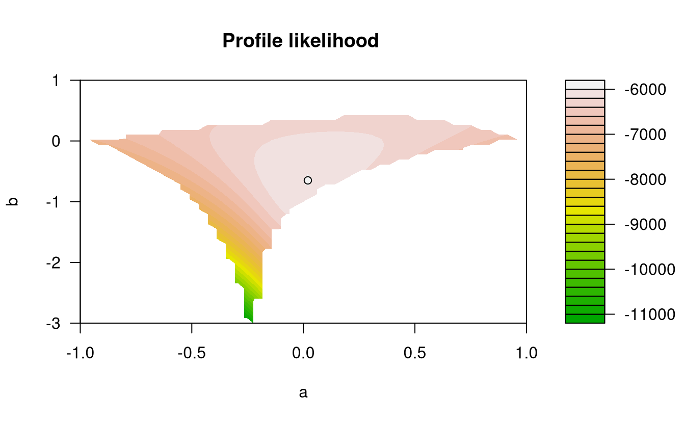

2 Multivariate model
- The multivariate conditional extremes model is a semiparametric regression model given one component is large.
- The model description assumes data are standardised to unit Laplace scale.
- Parameter estimates are obtained under a working assumption of normality and independence between components.
- Diagnostic plots for the models:
- threshold stability for dependence parameters
- tail correlation \(\chi(u)\): agreement between empirical estimates and fitted \(\chi(u)\) curve
- regression plots for conditional independence of residuals.
The conditional multivariate extreme model of Heffernan and Tawn (2004) is of the form \[\begin{align*} t(\boldsymbol{Y}_{-j})\mid t_j(Y_j)=t_j(y_j) \approx \boldsymbol{\alpha}_{|j}t_j(y_j)+t_j(y_j)^{\boldsymbol{\beta}_{|j}}\boldsymbol{Z} \end{align*}\] with \(\boldsymbol{\alpha}_{|j} \in [-1,1]^{D-1}\) and \(\boldsymbol{\beta}_{|j} \in [-\infty, 1]^{D-1}\) and \(\boldsymbol{Z}\) are unspecified residuals.
We fit the model under the working assumption that \(\boldsymbol{Z} \sim \mathsf{No}_{D-1}(\boldsymbol{\mu}_{|j}, \mathrm{diag}\{\boldsymbol{\sigma}_{|j}^2\})\) with nuisance parameters \(\boldsymbol{\mu}_{|j}\) and \(\boldsymbol{\sigma}^2_{|j}\). Since each margin is conditionally independent of the others, we can break the optimization in smaller chunks, by estimating each pair \(a_{k|j}, b_{k|j}\), etc. Thus, we fit each of the \(D-1\) margins separately with the likelihood derived from \[\begin{align*} t_k(Y_k) \mid t(Y_j)=t_j(y_j) \sim \mathsf{No}\left(\alpha_{k|j}t_j(y_j) + t_j(y_j)^{\beta_{k|j}}\mu_{i|j}, t_j(y_j)^{2\beta_{k|j}}\sigma^2_{k|j}\right), \qquad k \neq j, \end{align*}\] The profile likelihood for the pair (\(a_{k|j}\), \(b_{k|j}\)) is easily obtained upon noting that, for the data \[ z_{ik} =\frac{t_k(y_{ik}) - \alpha_{k|j}t_j(y_{ij})}{t_j(y_{ij})^{\beta_{k|j}}}, \] the conditional maximum likelihood estimators of \(\mu_{k|j}\) and \(\sigma^2_{k|j}\) are \(\widehat{\mu}_{k|j} \mid (\alpha_{i|j}, \beta_{i|j}) = \overline{z}_{k}\) and \(\widehat{\sigma}^2_{k|j}\mid (\alpha_{i|j}, \beta_{i|j}) = n^{-1}\sum_{i=1}^n (z_{ik} - \overline{z}_{k})^2\).
2.1 Strength of extremal dependence
Before fitting the Heffernan-Tawn model, we can look at the strength of the extremal dependence between pairs.
We can first calculate the coefficient of tail dependence \(\chi\) and \(\overline{\chi}\) to investigate the strength of the extremal dependence.
The tail correlation coefficient \(\chi(u)\) is \[\chi(v)= \frac{\Pr\{F_1(Y_1) > v, F_2(Y_2)>v\}}{1-v}. \] and if \(\chi = \lim_{v \to 1} \chi(v) >0\), we say that \((Y_1, Y_2)\) are asymptotically dependent. Since \(\chi=0\) for all asymptotically independent process, this is not useful measure.
The tail dependence coefficient (Coles, Heffernan, and Tawn 1999) \(\bar{\chi}\) is estimated using
\[\begin{align*}
\bar{\chi}(v) = \frac{2\log(1-v)}{\log[\Pr\{F_1(Y_1) > v, F_2(Y_2) > v\}}-1
\end{align*}\]
for \(v \in (0,1)\), so \(\overline{\chi} \in [-1,1]\) and asymptotically dependent processes have \(\lim_{v \to 1} \overline{\chi}(v)=1\). The statistic \(\chi\) is only useful when the data are asymptotically dependent, so we normally look first at \(\overline{\chi}\) and if the Wald confidence intervals include 1, look at the strength of the dependence using the plot of \(\chi\). The texmex package will gray out the latter if asymptotic dependence is ruled out.
# Create plot with matrix or data frame
# with 2 columns only
chiplot_13 <-
chi(FortCollins[,c("maxTemp","precip")])
chiplot_23 <-
chi(FortCollins[,c("minTemp","precip")])
# Truncated the plots to focus on the upper right tail
# because most of the rainfall records are zero
ggplot(chiplot_13, xlim = c(0.9,1))
ggplot(chiplot_23, xlim = c(0.9,1))(#fig:chi_plots)Tail dependence plots for maximum daily temperature (top panel) and minimum daily temperature (bottom panel), conditional on extreme rainfall. The right-hand panel is greyed out if asymptotic dependence has been ruled out.
The Heffernan-Tawn model implies that \(\chi(u)\) for \(u>0.5\) and \(v=-\log[2\{1-u\}]\) is of the form \[\begin{align} \chi(u) = \Pr\{\alpha_{k|j}t_j(Y_j)+t_j(Y_j)^{\beta_{k|j}}Z_{k|j} > v \mid F_j(Y_j) > u\} \label{HTchi} \end{align}\] so we can estimate empirically the coefficient of tail dependence from the model and use it as a graphical diagnostic.
The texmex package also includes a multivariate conditional estimator of Spearman’s \(\rho\) (linear correlation on the scale of \(F_1(Y_1), \ldots, F_D(Y_D)\)).
The function MCS computes the estimator, whereas bootMCS can be used to get a measure of uncertainty by running a nonparametric bootstrap and computing 95% pointwise confidence intervals.
- Repeat the exercise with the
minTemp/maxTemppair. - What do these sets of plots suggest about the asymptotic regime (asymptotic independence or dependence) and the strength of the dependence?
2.2 Fitting the multivariate model
The main function for fitting the conditional extreme value model in texmex is mex which gives the two stage procedure
and calls internally.
- First,
migpdfits a generalized Pareto distribution to each margin. Users must provide-
mthormqu: either the thresholds \(u_1, \ldots, u_D\) (argumentmth) or else a vector of probability levels \(F_1(u_1), \ldots, F_D(u_D)\) (argumentmqu) - User can compute the maximum a posteriori (instead of the maximum likelihood estimates) for parameters, with \(\log(\tau) \sim \mathsf{No}(0,100)\) independent of \(\xi \sim \mathsf{No}(0,0.25)\) as default prior specifications if
penality='gaussian'(the default).
-
- These standardized data are fed to
mexDependence. The latter has multiple arguments:-
which: the column index for the conditioning variable -
dqu: the probability level of the marginal quantile at which to specify \(t(\boldsymbol{Y}) \mid t_j(Y_j) > t_j(u_j)\); note that this threshold need not be the same as the marginal threshold for the generalized Pareto. -
marginsthe choice of distribution for the standardisation (default is ‘laplace’) -
marTransform: how to model \(F_k\) to transforms every component of \(\boldsymbol{Y}\) to standard Laplace margins. The default,marTransform="mixture"use the semiparametric transformation (the data are modelled with the empirical distribution below the threshold and with a generalized Pareto above \(u\)). The alternative is to use the empirical distribution (marTransform = "empirical"). -
constrainwhether to impose constraints to improve self-consistency for estimates of \(\boldsymbol{a}_{|j}\) and \(\boldsymbol{b}_{|j}\); defaut isTRUE; -
PlotLikDological; whether to produce a bivariate profile likelihood defined on a curved subset of \([-1,1] \times[-\infty, 1]\) ifconstrain=TRUE.
-
In general, unless you want to obtain the profile likelihood plot, you could directly use mex which combines these two steps.
Once we have determined marginal and functional thresholds and the choice of conditioning variable, we can perform all steps at once using mex.
marg <-
FortCollins %>%
select(!date) %>%
migpd(
mqu = rep(0.9, 3),
penalty = 'none'
)
condModFit <-
mexDependence(
x = marg,
which = "precip",
dqu = 0.9,
PlotLikDo = FALSE,
PlotLikRange = list(a = c(-1, 1),
b = c(-3, 1))
)
print(condModFit)
#> mexDependence(x = marg, which = "precip", dqu = 0.9, PlotLikDo = FALSE,
#> PlotLikRange = list(a = c(-1, 1), b = c(-3, 1)))
#>
#>
#> Marginal models:
#>
#> Dependence model:
#>
#> Conditioning on precip variable.
#> Thresholding quantiles for transformed data: dqu = 0.9
#> Using laplace margins for dependence estimation.
#> Constrained estimation of dependence parameters using v = 10 .
#> Log-likelihood = -5996 -6160
#>
#> Dependence structure parameter estimates:
#> maxTemp minTemp
#> a 0.0201 0.160
#> b -0.6488 -0.401
We can show that the components \(Y_j\) and \(Y_k\) are: - asymptotically dependent only if \(\alpha_{k|j}=1\), \(\beta_{k|j}=0\) - asymptotically independent if \(-1<\alpha_{k|j}<1\) - positive extremal dependence if \(\alpha_{k|j}>0\) - negative extremal dependence if \(\alpha_{k|j}<0\) - near independence if \(\alpha_{k|j}=\beta_{k|j}=0\). Negative values of \(\beta\) (\(b\) in the plots) imply that all if the conditional quantiles of \(Y_k\) converge to the same value as \(Y_j\). This is often implausible.
Are the estimates of \(\alpha_{k|j}\) and \(\beta_{j|j}\) in line with your expectations? Justify your answer.
2.3 Functionalities of mex and diagnostic plots
The output of mex or mexDependence is an object of class mex, for which many S3 methods are available (including print and summary). By default the plot (or ggplot) method produce diagnostic plots of
- standardized residuals \(\widehat{Z}_k(Y_j)\) against \(\widehat{F}_j(Y_j)\) with lowess curve
- absolute value of standardized residuals against \(\widehat{F}_j(Y_j)\)
- plot of \(Y_k\) against \(Y_j\) with fitted quantiles
If there is a trend, this contradicts somewhat the assumption that the residuals \(Z\) are independent of the value of \(Y_j\), and perhaps suggest that the threshold used for the dependence is too low.
ggplot(condModFit)(#fig:diag_mex_plots)Regression diagnostic plots for the fitted conditional extremes model.
2.4 Uncertainty quantification
- Uncertainty quantification is obtained using a semiparametric bootstrap scheme.
- Computationally expensive, replicate every step of the analysis with bootstrap data.
The drawback of the “bricolage” approach for model fitting is that we do not have readily available uncertainty quantification. Heffernan and Tawn address this by devising a semiparametric bootstrap scheme. It consists of the following steps:
- obtain nonparametric bootstrap sample (with replacement) from \(\{\boldsymbol{Y}_i, \ldots, \boldsymbol{Y}_n\}\)
- obtain \(D\) samples of size \(n\) from the standard Laplace margins \(\boldsymbol{Z}^{(b)}\).
- reorder Laplace observations of each margin so that their rank match that of the nonparametric bootstrap.
- transform observations to the data scale using \(\widehat{F}_j^{-1}(\cdot)\) \((j=1, \ldots, D)\)
Thus, we have a new dataset from which to estimate the dependence. Rince and repeat every step including
- empirical distribution estimation
- generalized Pareto above threshold
- multivariate model with coefficients
The bootmex package takes the output of mex or mexDependence and produces R replicates.
bootCondModFit <- bootmex(condModFit)So far, we have not assessed the choice of threshold for the procedure. We can produce a threshold stability plot by fitting the model over a range of values of dqu and look at the resulting estimates. This, coupled with some bootstrap replicates, is useful to make sure the optimization algorithm did converge and that the threshold is high enough for the approximation to hold.
threshold_stab_multi <-
mexRangeFit(
x = marg,
quantiles = seq(0.90, 0.98, by = 0.02),
which = "precip", #margin to condition on
R = 10L, # number of bootstrap samples
trace = Inf
)
ggplot(threshold_stab_multi)(#fig:threshold_stab_plots)Dependence threshold stability plots with 10 bootstrap replicates for the conditional extreme value model fitted above the 0.9 quantile of cumulated daily precipitation.
We can use the resulting object to produce scatterplots of pairs of parameter estimates for each margin and get bootstrap confidence intervals or standard errors for the parameters.
# ggplot method seems broken...
par(mfrow = c(1,2), bty = "l")
plot(bootCondModFit, plot = "dependence")(#fig:bootstrap_pair_plot)Scatterplot of bootstrap parameter estimates for the coefficients of the conditional extreme value model for maximum daily temperature (left) and minimum daily temperature (right) conditional on cumulated daily precipitation. The maximum likelihood estimate for the original data is indicated with the at-sign (red).
Create a plot of \(\chi(u)\) for \(u \in [0.8,1]\) and superimpose the curve corresponding to the fitted model and 100 bootstrap curves obtained with bootmex. Do the curves from the fitted model agree with the empirical estimates?